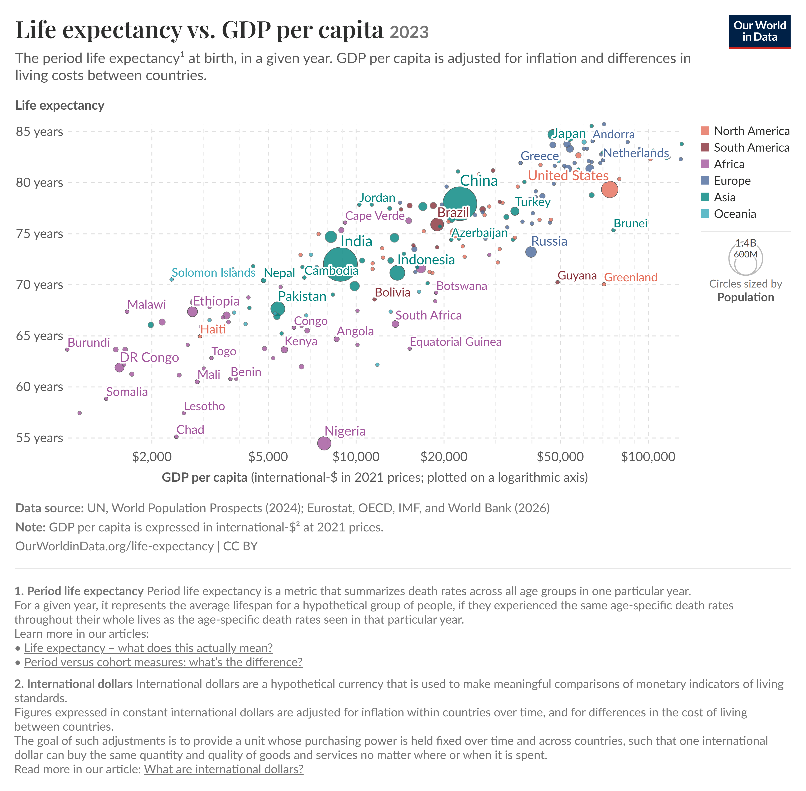

STATS 401 · Visualization Critique and Redesign
Beyond Wealth
Which Countries Live Longer—or Shorter—Than the Income–Longevity Trend Suggests?
A critique and redesign of Our World in Data's Life Expectancy vs. GDP per Capita visualization.
Original Visualization
The original Our World in Data visualization compares GDP per capita and life expectancy across countries in 2023. Horizontal position represents GDP per capita, vertical position represents life expectancy, circle size represents population, and color represents world region.

Source: Our World in Data, Life expectancy vs. GDP per capita, 2023.
Critique of the Original
Effective Position Encoding
GDP per capita and life expectancy are encoded using horizontal and vertical position. Because position is an effective channel for quantitative comparison, the overall relationship between the two variables is easy to perceive.
High Information Density
The visualization combines GDP, life expectancy, population, and world region in one chart, allowing viewers to explore several dimensions of the data simultaneously.
Population Bubbles Compete With the Main Task
Population is encoded using circle area. Area supports rough magnitude judgments but is less effective for precise comparison, while very large bubbles can visually dominate nearby countries and increase occlusion.
Dense Labels Create Visual Clutter
Country labels overlap in dense parts of the chart, making individual countries harder to identify and increasing competition between text and data marks.
The Overall Relationship Is Clear, but Deviations Are Hard to Compare
The chart clearly communicates that richer countries generally have higher life expectancy. However, viewers must estimate vertical distance from the overall pattern themselves, making it difficult to compare which countries have unusually high or low life expectancy relative to countries at similar income levels.
Redesigned Visualization
The redesign shifts the analytical question from "Are richer countries healthier?" to "Which countries deviate most from the typical income–longevity relationship?"
Hover over a country in either view to highlight it across both charts. Use the region buttons to focus the comparison.
VIEW 1 · OVERVIEW
Income and Life Expectancy
The fitted curve summarizes the typical relationship between GDP per capita and life expectancy. Point size represents the magnitude of deviation from that fitted trend.
VIEW 2 · COMPARISON
Deviation From the Income–Longevity Trend
The chart ranks the 16 countries with the largest absolute deviations in the selected region. Positive values indicate higher life expectancy than the fitted benchmark, while negative values indicate lower life expectancy.
Major Redesign Decisions
Reassigned Point Size to Analytical Importance
Population no longer controls circle size. Instead, point size represents the absolute deviation from the fitted income–longevity trend. This makes unusually high- or low-performing countries visually salient while population remains available through the tooltip.
Added a Fitted Income–Longevity Curve
A quadratic regression on log-transformed GDP provides a descriptive benchmark for the typical relationship between income and life expectancy. This makes deviation from the overall pattern visually interpretable.
Added a Coordinated Deviation Ranking
The second view transforms vertical distance from the fitted curve into a common quantitative scale measured in years. This makes unusual countries easier to rank and compare than in the original scatterplot alone.
Added Linked Interaction and Regional Filtering
Hovering over a country highlights it across both views, while region filters reduce unrelated visual competition. This supports movement between a global overview and more focused regional comparisons.
Original vs. Redesign
The original visualization is effective for communicating the broad relationship between national income and longevity. The redesign preserves that overview while making deviations from the relationship easier to discover and compare.
The fitted curve gives viewers a reference baseline, point size directs attention toward unusually large deviations, and the coordinated ranking converts those deviations into directly comparable values. Regional filtering further supports focused exploration without completely removing the global context.
One trade-off is that population is no longer visible as an immediate visual encoding. This information is moved to the tooltip because population is secondary to the redesigned analytical task.
Data Source
The redesign uses the displayed 2023 data downloaded from Our World in Data. The dataset includes country, GDP per capita, life expectancy, population, and world region.
The original chart reports data from sources including the United Nations, World Population Prospects, Eurostat, OECD, IMF, and World Bank.